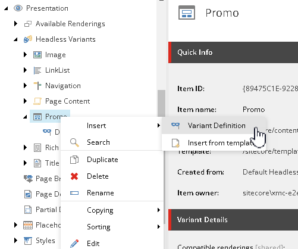
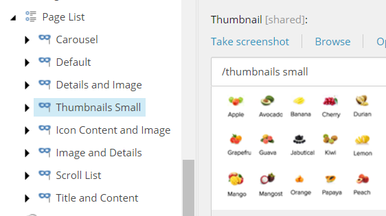
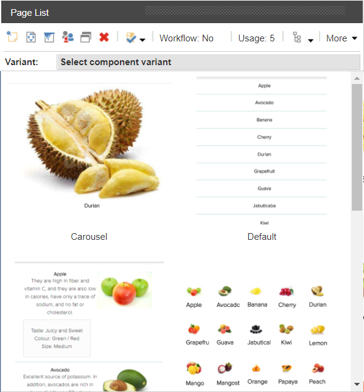

Create a rendering variant
Learn how to dynamically render fields in renderings.
SXA comes with a set of default renderings. To encourage reusability, designers and front-end developers can also create rendering variants. Rendering variants are configurable adaptations of the default renderings. This gives authors more options in the way they present their content.
Creating a variant is a two-step process. First, you create the code for the variant in the relevant component TSX file, for example Promo.tsx. Then you create a rendering variant in the Content Editor and refer to the variant as defined in the code.
The component TSX files are in the following directory:
[application root]\src\components
Code example:
The following example shows two variants for the Promo component: Default and Link. The Default variant renders a text field, and the Link variant renders a text field and a link.
export const Default = (props: PromoProps): JSX.Element => {
if (props.fields) {
return (
<div className={`component promo ${props.params.styles}`}>
<div className="component-content">
<div className="field-promoicon">
<JssImage field={props.fields.PromoIcon} />
</div>
<div className="promo-text">
<div>
<div className="field-promotext">
<JssRichText field={props.fields.PromoText} />
</div>
</div>
</div>
</div>
</div>
);
}
return <PromoDefaultComponent {...props} />;
};export const Link = (props: PromoProps): JSX.Element => {
if (props.fields) {
return (
<div className={`component promo ${props.params.styles}`}>
<div className="component-content">
<div className="promo-text">
<div>
<div className="field-promotext">
<Text className="promo-text" field={props.fields.PromoText} />
</div>
</div>
<div className="field-promolink">
<JssLink field={props.fields.PromoLink} />
</div>
</div>
</div>
</div>
);
}
return <PromoDefaultComponent {...props} />;
};To create a rendering variant in the Content Editor:
In the Content Editor, click the site and open the Presentation/Headless Variants folder. This folder lists all the renderings that allow variants.
Note
To add a rendering to the folder, contact your administrator.
Right-click the rendering that you want to add the variant to, select Insert, and then select Variant Definition.
Enter a name that is consistent with how the variant is named in the code and click OK, for example Link.
In the Variant Details section, specify the pages that the variant is available for. Click the relevant page template, click the right arrow to move it to the list of selected items, and then click Save. If there are no templates selected, the variant is available for all pages.
Optionally, in the Appearance section, you can add a thumbnail image for the variant. This image appears in the Variant list and can help content editors select the best variant for their purpose.
Content Editor
Experience Editor
  Save your changes.